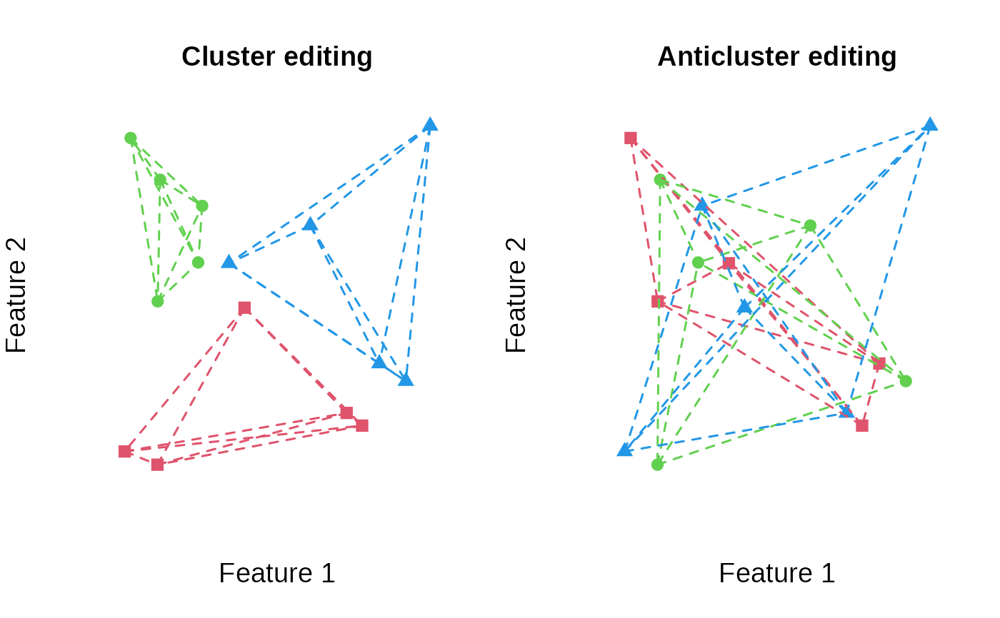

Visualize a cluster analysis
plot_clusters(
features,
clusters,
within_connection = FALSE,
between_connection = FALSE,
illustrate_variance = FALSE,
show_axes = FALSE,
xlab = NULL,
ylab = NULL,
xlim = NULL,
ylim = NULL,
main = "",
cex = 1.2,
cex.axis = 1.2,
cex.lab = 1.2,
lwd = 1.5,
lty = 2,
frame.plot = FALSE,
cex_centroid = 2
)A data.frame or matrix representing the features that are plotted. Must have two columns.
A vector representing the clustering
Boolean. Connect the elements within each clusters through lines? Useful to illustrate a graph structure.
Boolean. Connect the elements between each clusters through lines? Useful to illustrate a graph structure. (This argument only works for two clusters).
Boolean. Illustrate the variance criterion in the plot?
Boolean, display values on the x and y-axis? Defaults to `FALSE`.
The label for the x-axis
The label for the y-axis
The limits for the x-axis
The limits for the y-axis
The title of the plot
The size of the plotting symbols, see par
The size of the values on the axes
The size of the labels of the axes
The width of the lines connecting elements.
The line type of the lines connecting elements
(see par).
a logical indicating whether a box should be drawn around the plot.
The size of the cluster center symbol (has an
effect only if illustrate_variance is TRUE)
In most cases, the argument clusters is a vector
returned by one of the functions anticlustering,
balanced_clustering or matching.
However, the plotting function can also be used to plot the results
of other cluster functions such as kmeans. This function
is usually just used to get a fast impression of the results of an
(anti)clustering assignment, but limited in its functionality.
It is useful for depicting the intra-cluster connections using
argument within_connection.
N <- 15
features <- matrix(runif(N * 2), ncol = 2)
K <- 3
clusters <- balanced_clustering(features, K = K)
anticlusters <- anticlustering(features, K = K)
user_par <- par("mfrow")
par(mfrow = c(1, 2))
plot_clusters(features, clusters, main = "Cluster editing", within_connection = TRUE)
plot_clusters(features, anticlusters, main = "Anticluster editing", within_connection = TRUE)

par(mfrow = user_par)